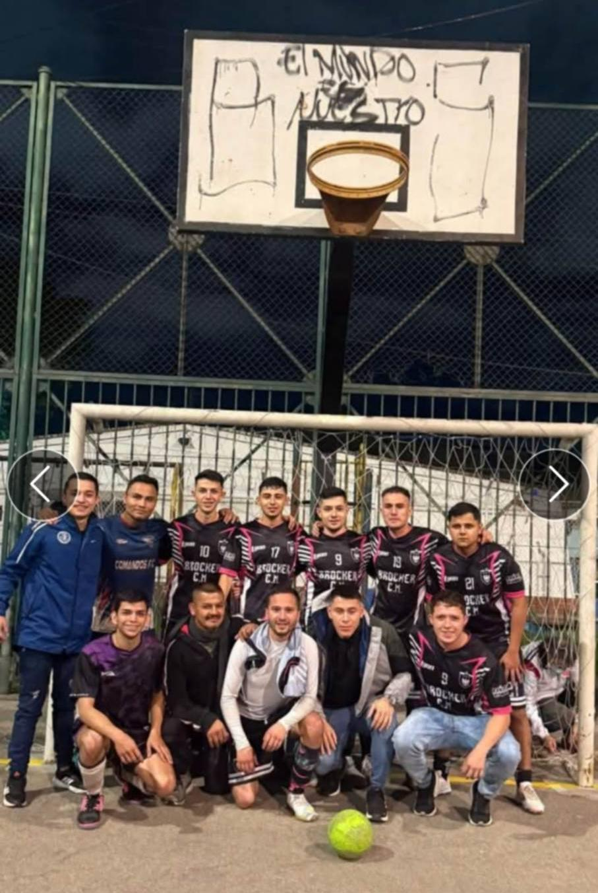

Historia del Microfutbol
El microfútbol en Colombia es un deporte muy popular que se juega en espacios cerrados con cinco jugadores por equipo. Se ha desarrollado ampliamente gracias a torneos nacionales como la Copa Profesional de Microfútbol y ha logrado reconocimiento internacional, destacándose como una potencia mundial. Su accesibilidad y dinamismo lo han convertido en una parte importante de la cultura deportiva del país.
Beneficios para tu salud
El microfútbol aporta varios beneficios para la salud, tanto físicos como mentales: Mejora la resistencia cardiovascular y la capacidad pulmonar. Fortalece músculos y huesos, especialmente en piernas y abdomen. Ayuda a quemar calorías y mantener un peso saludable. Desarrolla coordinación, agilidad y reflejos. Reduce el estrés y la ansiedad gracias a la actividad física. Fomenta el trabajo en equipo y la disciplina. En general, es una forma divertida y efectiva de mantenerse activo y cuidar la salud.

Mejora tu físico
El microfútbol es una excelente forma de transformar tu cuerpo de manera integral. Al ser un deporte dinámico y de alta intensidad, ayuda a quemar grasa, tonificar músculos y mejorar la resistencia física. Los constantes movimientos, cambios de ritmo y desplazamientos fortalecen principalmente las piernas, el abdomen y mejoran la coordinación. Además, su práctica regular contribuye a mantener un peso saludable y a desarrollar mayor agilidad y condición física, convirtiéndolo en una opción completa para mejorar tu físico mientras disfrutas del juego.

Más energía y confianza
Practicar microfútbol de forma regular aumenta tus niveles de energía al mejorar la circulación y la resistencia física. Además, el ejercicio libera endorfinas, lo que ayuda a reducir el estrés y mejorar el estado de ánimo. Con el tiempo, ver avances en tu rendimiento y condición física fortalece tu autoestima, haciéndote sentir más seguro y con mayor confianza tanto dentro como fuera de la cancha.